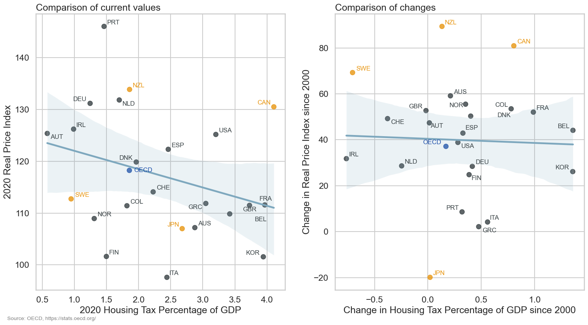
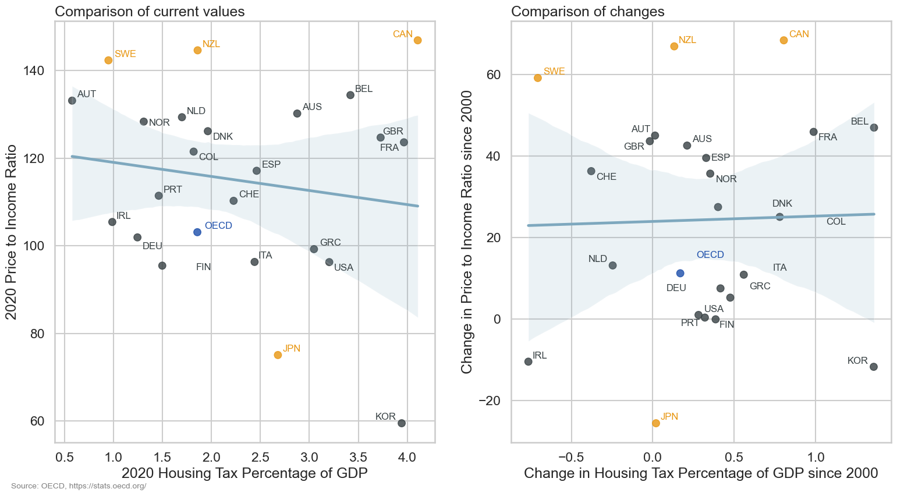

OECD Housing Data
1 Introduction
This document presents a short analysis of housing data from the Organisation for Economic Co-operation and Development (OECD). There are two aspects we are going to look at, the cost and affordability of housing and the amount of taxation associated with it. We are interested both in how this aspects have changed in different countries over time but also how they relate to each other. For example it could be that countries with higher rates of housing taxation have lower housing costs (because taxation increases the cost of purchasing a house) or that that countries with higher tax rates are encouraged to increase the cost of housing in order to generate more tax revenue. We will also highlight a few countries of interest that stand out in the dataset, specifically New Zealand, Canada, Sweden and Japan.
2 The data
The data we will look at has been downloaded as CSV files from the OECD stats explorer (https://stats.oecd.org/). The OECD produces many different statistics about both housing and taxation summarised in different ways but we will just look at a few of the simpler annual statistics (you can see some of their analysis of housing statistics and housing taxation on the OECD data website). After cleaning and tidying the data we have values for 23 countries from 2000 to 2020 as well as the OECD averages for each year.
Let’s have a look at the individual statistics we have.
2.1 Real Price Index
The Real Price Index is a country and seasonally adjusted measure of housing prices that takes into account the (to some degree) the economic situation of each country. It is indexed to the value in 2015 so that each country has a value of 100 in 2015 and the values for other years are relative to this point. Because of the way it is calculated it is not really appropriate to compare exact values between countries but we can compare changes over time.
These bar plots show both the Real Price Index for 2020 (the last year in our dataset) for each country and the change in the Real Price Index since 2000.
We can see that most countries have seen a significant increase over the last two decades with most countries having an increase of between 30-60% since 2020. There are a few notable exceptions from this. New Zealand, Canada and Sweden have all seen greater increases with New Zealand having the greatest increase of over 80%. On the other hand we see that Portugal, Greece and Italy have similar real housing prices compared to 2000, perhaps related to the fact that these were some of the European countries most affected by the 2008 global financial crisis. The only country with a significant decrease in real housing prices is Japan, which has seen a decrease of around 20% since 2000.
2.2 Price to income ratio
In contrast to the Real Price Index which measures the cost of housing the price-to-income ratio attempts to measure housing affordability. It is calculated by dividing house prices by average disposable income so that higher values indicate less affordable housing. The values we have here have been standardised and indexed in order to take into accoun the long term average in each country.
The overall trend here is similar to what we saw for the the real price index, although there are more countries with smaller changes suggesting that in those countries housing price growth has been more closely aligned with income growth. New Zealand, Canada and Sweden again stand out as both having the highest price to income ratios as well as the greatest increases since 2000. Japan again has the biggest decrease but this time it is joined by the Republic of Korea and Ireland which also have decreases in the price to income ratio (and therefore relatively more affordable housing).
2.3 Housing tax percentage of GDP
The first housing taxation measure considers the amount of tax paid on housing as a percentage of each country’s gross domestic product (GDP). GDP is the standard measure of economic output so by this measure lets us see housing taxation relative to the economic situation of each country.
This is quite different to what we saw for the housing statistics. There is quite a large range of values (between around 0.5% and 4%) and the changes since 2000 are not as well linked to the current values. Our countries of interset are also spread across the range of values. Canada has seen the greatest increase in housing taxation as a percentage of GDP over the last two decades and now has the largest value in the dataset, while Sweden has followed the opposite trend with signficant decreases leading it to have one of the lowest values. New Zealand and Japan are both somewhere in the middle, having moderate housing taxation compared to GDP that have not changed much since 2000.
2.4 Housing tax percentage of total tax
The second taxation measure considers housing taxation as a percentage of the total tax paid. While this doesn’t tell us anything about the levels of taxation compared to economic output it may give us more of an idea of the taxation priorities of each country.
We see both similarities and differences compared to the GDP taxation measure. Sweden has again seen decreases and has one of the lowest rates of housing taxation while Canada has seen increases and has one of the highest rates. Although both the Republic of Korea and the United States have seen bigger increases and have higher rates of housing taxation than Canada by this measure. New Zealand again sits right near the OECD average and hasn’t changed over the last twenty years but while Japan has a similar ranking of it’s 2020 values as we saw with the GDP measure it has seen a significiant decrease in housing taxation as a percentage of total tax. It is also interesting to see the range of values here with several countries only receiving around 3% of their total tax revenue from housing taxation while for others this is greater than 10%.
3 What effect does taxation have on housing?
Now that we have looked at the individual statistics let’s consider the relationships between them and see if we can see if we can see any patterns between taxation and housing prices.
3.1 Relationship between housing variables
First let’s see how the two housing variables compare to each other. These scatter plots show the 2020 Real Price Index compared to the 2020 price to income ratio for each country as well as the comparison in changes since 2000. The lines indicate a linear trend between the two variables will the shaded area shows a confidence interval for this linear model.
There is weak positive relationship between the 2020 values of the two housing variables. In general countries with higher housing prices also have higher price to income ratios but there are several countries that are similar in one but different in the other. The comparision of changes since 2000 shows a clearer picture and we can see that countries that have seen increases in house prices have also seen a decreases in housing affordability. As we saw earlier New Zealand, Canada and Sweden stand out at the top of these plots while Japan is an outlier at the bottom.
3.2 Relationship between taxation variables
The next comparison we will look at is the relationship between the two taxation variables.
The trend here is clear whether we look at the 2020 values or the changes over time. In both cases we see that a high value or a big change in one variable is very likely to mean a high value or big change for the other.
3.3 Relationships between taxation and housing costs
Now that we have seen how the statistics that measure similar things compare to each other, let’s look at the (hopfully) more interesting part, how housing measures and taxation are related to each other.
3.3.1 Taxation and Real Price Index
The first measure we will look at is the Real Price Index. These scatter plots show how the Real Price Index compares to the housing taxation measures. Because the taxation measures are so related we will consider them together.

There is a weak negative trend here with countries that have higher housing taxation tending to have lower house prices in 2020. We don’t see a clear relationship between the changes in these measures though. If we consider New Zealand, Canada and Sweden we see that all three countries have seen similar large increases in the Real Price Index but either negative (Sweden), neutral (New Zealand) or positive (Canada) changes in housing taxation. This suggests that changes in housing taxation are not a major cause of changes in house prices (although there is a lot we haven’t considered here and we would expect there to be some delay between a change in taxation and any effect).
3.4 Taxation and price to income ratio
What about the relationship between taxation and housing affordability?

This is probably less clear than when looking at the Real Price Index. There may be a similar weak negative trend but this is uncertaion and is likely to be affected by the Republic of Korea which is a large negative outlier. Again we see that New Zealand, Canada and Sweden have similar increases in the price to income ration but different changes in housing taxation. Overall it seems that taxation is a less effective predictor of the price to income ratio than the Real Price Index. An obvious explanation for this is that the price to income ratio includes disposal income which is affected by many factors including taxation.
4 Conclusion
So, what did we find out?
- New Zealand, Canada and Sweden have all seen large increases in house prices since 2000 but have different current levels of house prices
- These countries also have the highest price to income ratios (lowest affordability) and the biggest increases in this measure since 2000
- Japan is the only country that has seen significant decreases in house prices since 2000. This has lead to a lower price to income ratio (higher affordability) and may be the cause of a decrease in the percentage of it’s tax revenue that comes from housing taxation
- There may be weak relationships between housing taxation and housing costs, with higher taxation leading to lower house prices and higher affordability. However, these relationships are not clear and may be affected by outliers.
- Changes in taxation policy do not seem to be a major cause of changes in house prices with countries that have seen large increases in house prices having different trends in the amount of housing tax collected
- Overall, the relationship between housing and taxation is (unsurpisingly) much more complex than what we have considered here and if we wanted to properly understand what causes changes in house prices there are many other factors we would need to consider, many of which are probably country specific